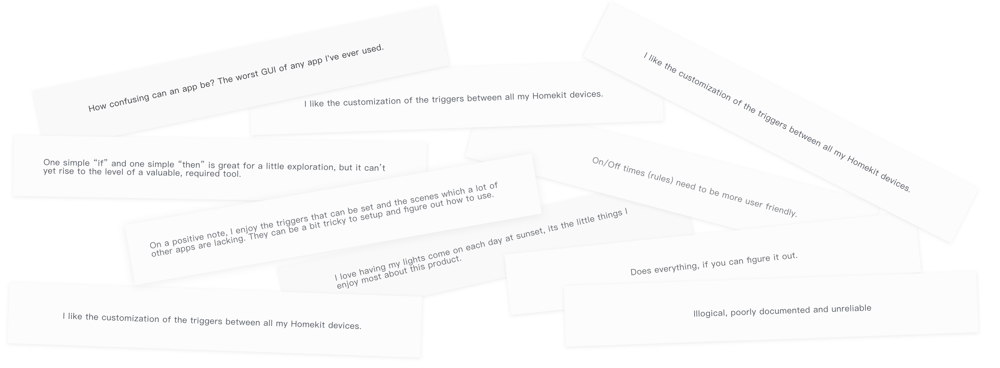
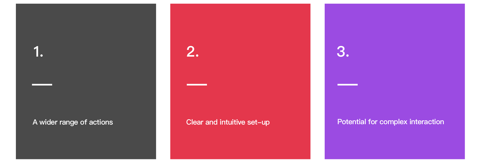
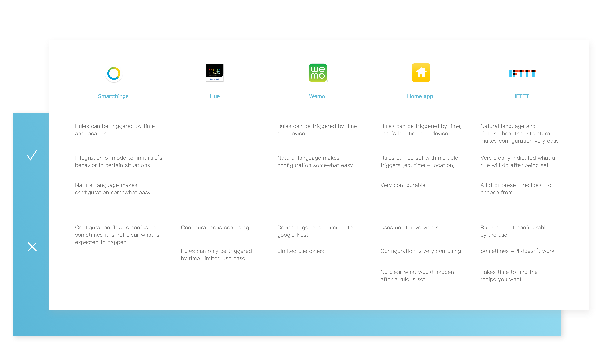
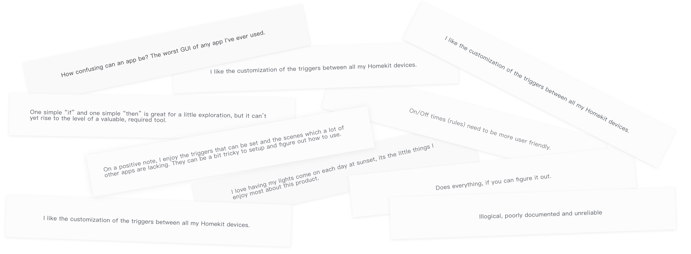

What do the users want?
The user review from Apple Appstore as well as the Google Playstore gave me a lot of insight into what the users wanted for the application, and pointed some directions to the design.

In order to get a thorough understanding of current home automation apps, I looked into some major smart-home competitors as well as some user feedback to get a good sense of where to start. All of our competitors have some forms of automation. However, the approach is very different.
The user review from Apple Appstore as well as the Google Playstore gave me a lot of insight into what the users wanted for the application, and pointed some directions to the design.
Based on research previously done by TP-LINK as well as my own research above, I summarized and distilled the information from the research and came up with the core components of an automation rule: trigger, condition, and action.
Iteration 1Making the set-up process easy and limiting the complexity.
Iteration 2Experimenting with bringing out potential for complex interaction.
Final IterationCombining easy and intuitive set-up process with complex interaction.
I used natural language and fill-in-the-blank style instructions in order to give users ideas of what they are setting up and what the function would actually be like in words that they understand. Because the process is rather confusing and requires logic, I made it very easy for users to go back and correct any mistakes they made.
I also made sure whatever they have already set up is always visible to them in order to help them diagnose any errors as well as progressing further in the steps.
Although I aim to provide maximum flexibility, for some more nuisance details, I chose to only provide users with visible increments of options: for instance, setting up the brightness of a lightbulb at 0%, 25%, 50%, 75% and 100%. This provides convenience to both the user and the programmer.